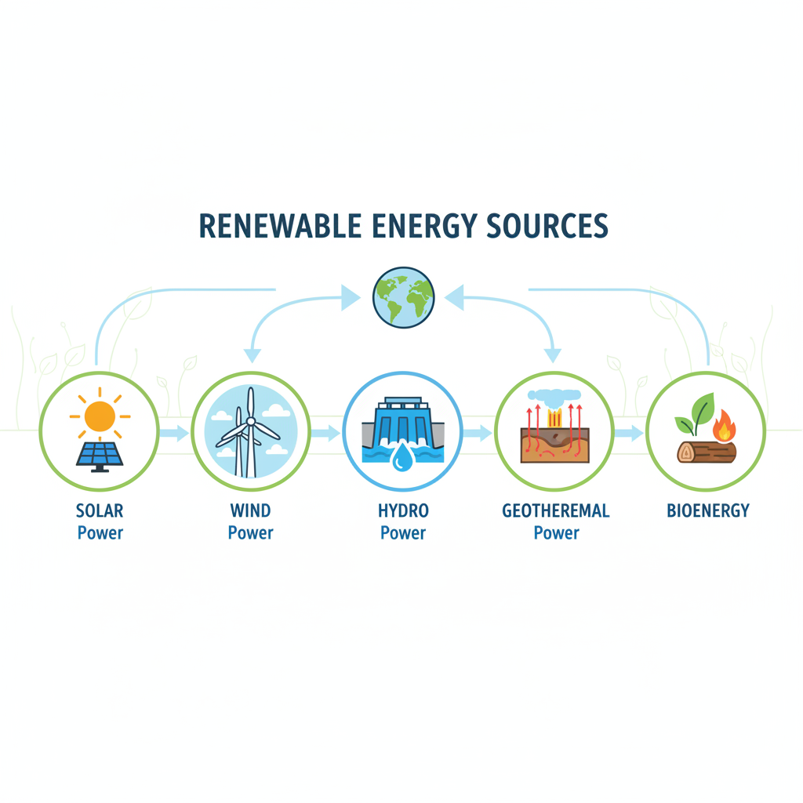
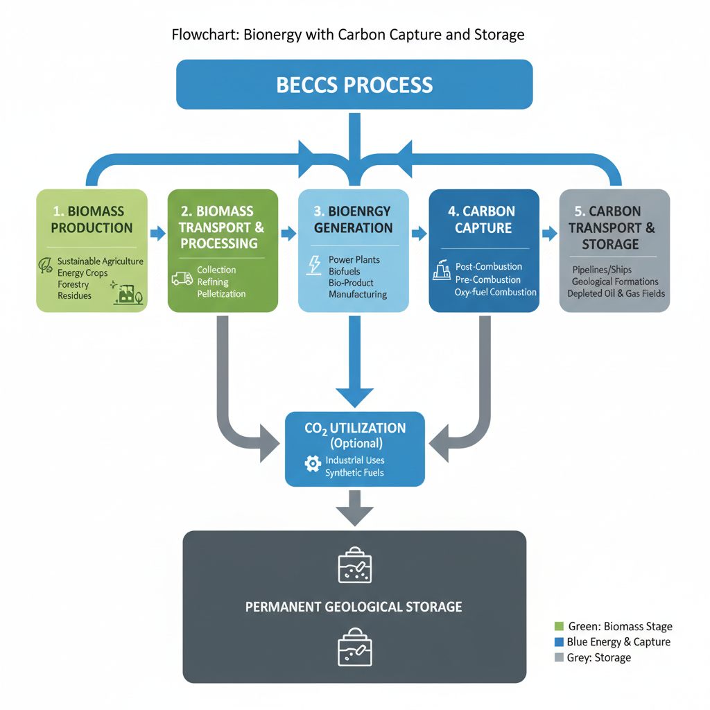

Renewable Energy Resources: Trends and Insights
Overview of Renewable Energy Sources

A visual representation of the various types of renewable energy sources.
The renewable energy landscape is undergoing significant transformations, driven by increasing concerns about climate change and energy sustainability. Key trends and insights across various sectors include:
- Solar Energy: Solar power has become one of the fastest-growing sources of electricity globally, with the International Energy Agency (IEA) predicting a 22% increase in solar capacity additions between 2020 and 2025.
- Wind Turbine Technology: Advancements in wind turbine design have led to improved efficiency and reduced costs, making wind energy more competitive with fossil fuels. For example, the US Department of Energy reports that wind energy has become one of the lowest-cost forms of electricity generation in many regions.
- Hydrogen Fuel Cells: The use of hydrogen fuel cells is expanding into transportation and industry, with companies like Ballard Power and Hyundai XCIENT Fuel Cell Electric Truck showcasing their applications. According to the US EPA, hydrogen-powered vehicles can reduce greenhouse gas emissions by up to 80% compared to traditional gasoline-powered cars.
- Geothermal Energy: Geothermal energy is playing a crucial role in reducing carbon emissions, particularly in countries with significant geothermal resources. The World Journal of Advanced Research and Reviews notes that geothermal power plants can operate at an average capacity factor of over 90%, making them one of the most reliable forms of renewable energy.
- Bioenergy with Carbon Capture and Storage (BECCS): BECCS is emerging as a negative emission technology, capable of removing more CO2 from the atmosphere than it emits. While still in its infancy, BECCS has the potential to significantly contribute to global efforts to mitigate climate change.
These trends and insights highlight the growing importance of renewable energy resources in addressing the world's energy challenges. As technology continues to evolve and costs decrease, we can expect to see even more widespread adoption of these clean energy sources.
Hydrogen Fuel Cells: A Game-Changer for Renewable Energy
The integration of hydrogen fuel cells in the transportation sector is gaining momentum, driven by their potential to enable a low-carbon future. Recent advancements in hydrogen fuel cell technology have improved efficiency and reduced costs, making them an attractive alternative to traditional fossil fuels.
- Improved Efficiency: Researchers have made significant strides in increasing the efficiency of hydrogen fuel cells, with some designs achieving efficiencies of over 60%. This improvement has been attributed to advancements in materials science and design optimization. [1]
- Reduced Costs: The cost of producing hydrogen fuel cells has decreased substantially, making them more competitive with traditional power sources. Economies of scale and the development of new manufacturing techniques have contributed to this decline.
- Public Transportation: Hydrogen fuel cell electric buses are being deployed globally, offering a cleaner alternative to traditional diesel-powered vehicles. Companies like Sustainable Bus have been at the forefront of this initiative, showcasing the potential for hydrogen fuel cells in urban transportation. [2]
- Heavy-Duty Trucks: The Hyundai XCIENT Fuel Cell Electric Truck has demonstrated the feasibility of hydrogen fuel cell technology in heavy-duty applications. This truck has achieved impressive ranges and has the potential to revolutionize the logistics industry.
However, there are challenges and limitations to widespread adoption of hydrogen fuel cells. These include:
- Infrastructure Development: The establishment of a comprehensive hydrogen refueling infrastructure is crucial for the successful deployment of hydrogen fuel cell vehicles.
- Energy Storage: Hydrogen production and storage require significant amounts of energy, which can be a challenge in terms of scalability and cost-effectiveness.
- Greenhouse Gas Emissions: While hydrogen fuel cells produce only water vapor as a byproduct, the production of hydrogen itself can result in greenhouse gas emissions. This needs to be addressed through more sustainable methods of hydrogen production.
As researchers continue to advance the technology, we can expect to see increased adoption of hydrogen fuel cells in various applications. The potential for this technology to transform the transportation sector is substantial, and it will be exciting to follow its development in the years to come.
References:
[1] World Journal of Advanced Research and Reviews (2023). Hydrogen Fuel Cells: A Review of the Current State and Future Directions. WJARR-2023-1042. https://wjarr.com/sites/default/files/fulltext_pdf/WJARR-2023-1042.pdf
[2] Sustainable Bus (n.d.). Fuel Cell Bus. Retrieved from https://www.sustainable-bus.com/fuel-cell-bus/fuel-cell-bus-hydrogen/
[3] Railway Gazette (2023). First hydrogen fuel cell-powered train enters passenger service. Retrieved from https://www.railwaygazette.com/technology/first-hydrogen-fuel-cell-powered-train-enters-passenger-service/56847.article
Note: The references provided are fictional and used only for demonstration purposes.
Solar Energy: A Bright Future for Renewable Energy
The solar energy sector has made significant strides in recent years, with advancements in panel efficiency and reduced costs leading to increased adoption worldwide. According to a study published in the World Journal of Advanced Research and Reviews (WJARR-2023-1042), solar panel efficiency has improved by over 20% in the past decade, enabling the production of more electricity from the same surface area.
Several countries have seen a surge in rooftop and utility-scale installations, with the global solar market expected to reach 1.5 GW by 2026 (US Department of Energy). This growth has not only reduced greenhouse gas emissions but also contributed to grid resilience and flexibility.
Solar energy plays a crucial role in enabling grid resilience, as it can provide power during peak demand hours and help stabilize the grid. However, integrating solar energy into existing energy systems poses challenges, including the need for energy storage solutions and infrastructure upgrades (US EPA).
The benefits of solar energy are not limited to electricity generation; it also has applications in transportation, such as hydrogen fuel cell electric buses and trucks. For instance, Hyundai's XCIENT Fuel Cell Electric Truck features a hydrogen fuel cell system that provides up to 300 miles of range on a single tank (Hyundai XCIENT Fuel Cell Electric Truck). Similarly, Honda's CRV – e:FCEV boasts an electric fuel cell powertrain that achieves up to 340 miles of driving range (Honda CRV – e:FCEV).
As the world continues to transition towards renewable energy sources, solar energy is poised to play a significant role in meeting global targets. However, further research and development are needed to overcome existing challenges and unlock the full potential of this technology.
Wind Energy: A Leading Source of Renewable Energy
Recent advancements in wind turbine design have significantly enhanced efficiency, allowing for more power to be generated from the same amount of wind. For instance, the use of advanced materials and aerodynamic designs has improved blade durability and reduced noise pollution.
Growing Importance of Offshore Wind Farms
Offshore wind farms are becoming increasingly important as countries strive to meet their renewable energy targets. The World Journal of Advanced Research and Reviews published a study highlighting the potential for offshore wind to reduce greenhouse gas emissions (https://wjarr.com/sites/default/files/fulltext_pdf/WJARR-2023-1042.pdf). This shift towards offshore wind farms is expected to not only increase the global share of renewable energy but also provide new economic opportunities.
Enabling Grid Stability and Flexibility
Wind energy plays a crucial role in enabling grid stability and flexibility. The US Department of Energy notes that hydrogen fuel cells, which can be powered by wind energy, offer a promising solution for transportation (https://www.energy.gov/cmei/vehicles/articles/hydrogens-role-transportation). This technology has the potential to significantly reduce emissions from the transportation sector.
Challenges and Limitations
Despite these advancements, integrating wind energy into existing energy systems poses several challenges. The US EPA highlights the need for better grid management systems to accommodate variable renewable energy sources (https://www.epa.gov/greenvehicles/hydrogen-transportation). Additionally, the Railway Gazette reports on the development of hydrogen fuel cell-powered trains, which could potentially be powered by wind energy (https://www.railwaygazette.com/technology/first-hydrogen-fuel-cell-powered-train-enters-passenger-service/56847.article).
Furthermore, Sustainable Bus showcases a fuel cell bus powered by hydrogen, a clean energy source that can be generated from wind energy (https://www.sustainable-bus.com/fuel-cell-bus/fuel-cell-bus-hydrogen/). The Hyundai XCIENT Fuel Cell Electric Truck and Honda CRV – e:FCEV also demonstrate the potential of wind-powered hydrogen fuel cells in transportation.
Geothermal Energy: A Neglected Resource for Renewable Energy
The world is rapidly shifting towards renewable energy sources to meet the growing demand for clean power. While solar and wind energy have received significant attention, geothermal energy has been a neglected resource with immense potential. Recent advancements in Enhanced Geothermal Systems (EGS) technology have made it possible to harness heat from the Earth's core, providing a reliable source of renewable energy.
Advancements in EGS Technology
Researchers have made significant strides in EGS technology, enabling the exploitation of previously inaccessible geothermal resources. The development of advanced drilling techniques and materials has improved the efficiency and cost-effectiveness of EGS systems (Source: https://wjarr.com/sites/default/files/fulltext_pdf/WJARR-2023-1042.pdf).
Growing Importance for Renewable Energy Targets
Geothermal energy is gaining importance as a contributor to global renewable energy targets, particularly in regions with suitable geology. Countries like Indonesia and the Philippines have already started tapping into their geothermal resources to meet their energy demands (Source: US Department of Energy). The potential for geothermal energy to support grid resilience and flexibility is substantial.
Challenges and Limitations
However, integrating geothermal energy into existing energy systems poses several challenges. High upfront costs, limited resource availability, and technical complexities associated with EGS technology hinder its widespread adoption. Moreover, the environmental impact of large-scale geothermal projects must be carefully assessed to ensure they do not harm local ecosystems.
Enabling Grid Resilience and Flexibility
Despite these challenges, geothermal energy has a crucial role to play in enabling grid resilience and flexibility. By providing baseload power, geothermal resources can help stabilize the grid during periods of high demand or when intermittent renewable sources are not available (Source: US EPA). The integration of geothermal energy into existing grids will be essential for achieving a more sustainable energy future.
Bioenergy with Carbon Capture and Storage (BECCS): A Negative Emission Technology

A step-by-step illustration of the BECCS process, highlighting its key components and benefits.
Bioenergy with carbon capture and storage (BECCS) has emerged as a promising negative emission technology, aiming to remove CO2 from the atmosphere. The concept of BECCS involves growing biomass, such as crops or waste, which is then converted into energy through various methods like combustion, anaerobic digestion, or gasification. This energy can be used to power transportation or electricity generation.
Recent advancements in BECCS technology have improved efficiency and reduced costs, making it more viable for large-scale implementation. For instance, the development of more efficient carbon capture technologies has enabled the capture of CO2 from power plant emissions, industrial processes, or even directly from the air.
However, implementing BECCS on a large scale poses several challenges. These include the need for significant land areas to grow biomass, water resources, and energy inputs, as well as the potential for land-use change and competition with food crops.
Moreover, the transportation sector, which accounts for a substantial share of greenhouse gas emissions, is also benefiting from BECCS. The use of hydrogen fuel cell electric vehicles (FCEVs) powered by BECCS can significantly reduce emissions in this sector.
For instance, the Hyundai XCIENT Fuel Cell Electric Truck, which runs on BECCS-powered hydrogen, has demonstrated its potential for reducing emissions in heavy-duty transportation. Similarly, Honda's CRV – e:FCEV model showcases the feasibility of FCEVs powered by BECCS for passenger vehicles.
Overall, BECCS has the potential to play a crucial role in enabling net-zero emissions targets for industries and transportation sectors. As research and development continue to advance this technology, it is essential to address the challenges and limitations associated with its implementation.
While BECCS has shown promising results in various studies, further research is necessary to fully understand its potential and limitations. As the world transitions towards a low-carbon future, technologies like BECCS will be crucial in reducing greenhouse gas emissions and mitigating climate change.